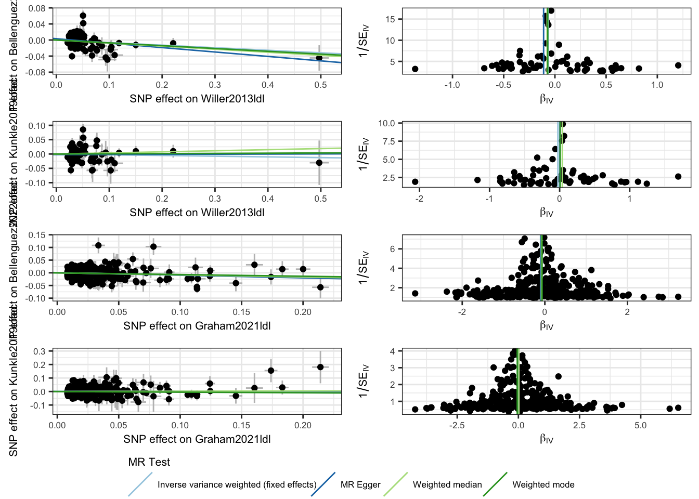

Load R Packages
library(tidyverse) # Data wrangling
library(glue)
library(TwoSampleMR) # MR
library(LDlinkR) # LD and proxy snps
library(lhcMR)
library(gt)
# Usr defined functions
source('scripts/misc_functions.R')library(tidyverse) # Data wrangling
library(glue)
library(TwoSampleMR) # MR
library(LDlinkR) # LD and proxy snps
library(lhcMR)
library(gt)
# Usr defined functions
source('scripts/misc_functions.R')[Introduction: insert text]
## Import harmonized data
mr_dat <- read_csv('data/harmonized_ldl_AD_data.csv') %>%
mutate(
outcome = str_replace(outcome, '_stage123', ''),
# mr_keep = ifelse(gws.outcome == TRUE, TRUE, mr_keep)
)
## MR
mr_res <- mr(mr_dat, method_list = c("mr_ivw_fe", "mr_egger_regression", "mr_weighted_median", "mr_weighted_mode")) %>%
as_tibble()
## Single SNP analysis
res_single <- mr_singlesnp(mr_dat, all_method = c("mr_ivw_fe", "mr_egger_regression", "mr_weighted_median", "mr_weighted_mode")) %>% as_tibble()
## Egger intercept for pleitropy
res_pleio <- mr_pleiotropy_test(mr_dat)
## Cochrans Q for heterogeneity
res_het <- mr_heterogeneity(mr_dat, method_list = c("mr_egger_regression", "mr_ivw"))
# Radial MR
# radial_dat <- mr_dat %>% filter(mr_keep == T) %>% dat_to_RadialMR()
# radial_res <- map(radial_dat, function(x){
# ivw_radial(x, alpha = 0.05/nrow(x))
# }
# )[insert text]
| method | nsnp | b | se | pval | |
|---|---|---|---|---|---|
| Willer2013ldl | |||||
| Bellenguez2022load | IVW | 66 | −0.06 | 0.02 | 0.003 |
| Bellenguez2022load | MR Egger | 66 | −0.11 | 0.06 | 0.062 |
| Bellenguez2022load | Weighted median | 66 | −0.08 | 0.03 | 0.021 |
| Bellenguez2022load | Weighted mode | 66 | −0.07 | 0.03 | 0.025 |
| Kunkle2019load | IVW | 66 | −0.03 | 0.04 | 0.525 |
| Kunkle2019load | MR Egger | 66 | 0.01 | 0.09 | 0.956 |
| Kunkle2019load | Weighted median | 66 | 0.04 | 0.06 | 0.535 |
| Kunkle2019load | Weighted mode | 66 | 0.01 | 0.06 | 0.898 |
| Graham2021ldl | |||||
| Bellenguez2022load | IVW | 349 | −0.08 | 0.02 | 9.7 × 10−4 |
| Bellenguez2022load | MR Egger | 349 | −0.10 | 0.05 | 0.046 |
| Bellenguez2022load | Weighted median | 349 | −0.08 | 0.04 | 0.035 |
| Bellenguez2022load | Weighted mode | 349 | −0.07 | 0.05 | 0.180 |
| Kunkle2019load | IVW | 349 | 0.00 | 0.04 | 0.941 |
| Kunkle2019load | MR Egger | 349 | 0.00 | 0.08 | 0.992 |
| Kunkle2019load | Weighted median | 349 | 0.02 | 0.07 | 0.783 |
| Kunkle2019load | Weighted mode | 349 | −0.05 | 0.09 | 0.591 |
## Plots
scatter_p <- mr_scatter_plot(mr_res, mr_dat) %>%
map(., function(scater_plot){
scater_plot + theme_bw() +
theme(
legend.position = 'none',
text = element_text(size = 8),
)
})
funnel_p <- mr_funnel_plot(res_single) %>%
map(., function(funnel_plot){
funnel_plot + theme_bw() +
theme(
legend.position = 'none',
text = element_text(size = 8),
)
})
mr_legend <- cowplot::get_legend(
mr_scatter_plot(mr_res, mr_dat)[[1]] + theme_bw() +
guides(colour = guide_legend(nrow = 1)) +
theme(
text = element_text(size = 8),
)
)
joint_mr_p <- cowplot::plot_grid(
plotlist=c(scatter_p, funnel_p),
ncol = 2, byrow = FALSE,
align = 'hv'
)
mr_p_out <- cowplot::plot_grid(
joint_mr_p, mr_legend,
ncol = 1,
rel_heights = c(1, 0.1)
)
mr_p_out
ggsave("results/plots/mr_ldl_ad_all.png", units = "in", height = 6, width = 4)
# Radial MR
# radial_p <- map(radial_res, function(x){
# plot_radial(x, radial_scale = F, show_outliers = F)
# }
# )[Pleiotropy: insert text]
| egger_intercept | se | pval | |
|---|---|---|---|
| Willer2013ldl | |||
| Bellenguez2022load | 0.00 | 0.00 | 0.321 |
| Kunkle2019load | 0.00 | 0.01 | 0.688 |
| Graham2021ldl | |||
| Bellenguez2022load | 0.00 | 0.00 | 0.487 |
| Kunkle2019load | 0.00 | 0.00 | 0.952 |
[Heterogeneity: insert text]
# Heterogeneity statistics
res_het <- mr_heterogeneity(mr_dat, method_list = c("mr_egger_regression", "mr_ivw"))
res_het %>%
select(-id.exposure, -id.outcome, -outcome, -exposure) %>%
gt() %>%
fmt_number(
columns = Q
) %>%
fmt_number(
columns = Q_pval,
rows = Q_pval > 0.001,
decimals = 3
) %>%
fmt_scientific(
columns = Q_pval,
rows = Q_pval <= 0.001,
decimals = 1
)| method | Q | Q_df | Q_pval |
|---|---|---|---|
| MR Egger | 163.37 | 64 | 1.2 × 10−10 |
| Inverse variance weighted | 165.92 | 65 | 9.0 × 10−11 |
| MR Egger | 111.96 | 64 | 2.0 × 10−4 |
| Inverse variance weighted | 112.25 | 65 | 2.5 × 10−4 |
| MR Egger | 683.04 | 347 | 3.5 × 10−24 |
| Inverse variance weighted | 684.00 | 348 | 3.9 × 10−24 |
| MR Egger | 487.97 | 347 | 8.5 × 10−7 |
| Inverse variance weighted | 487.97 | 348 | 1.0 × 10−6 |
## File paths needed for the analysis
LD.filepath = "resources/LDscores_filtered.csv" # LD scores
rho.filepath = "resources/LD_GM2_2prm.csv" # local/SNP-specfic LD scores
ld = "resources/eur_w_ld_chr/"
hm3 = "resources/w_hm3.snplist"paths = c(
"resources/Graham2021ldl.chrall.CPRA_b37.tsv.gz",
"resources/Willer2013ldl.chrall.CPRA_b37.tsv.gz",
"resources/Kunkle2019load_stage123.chrall.CPRA_b37.tsv.gz",
"resources/Bellenguez2022load.chrall.CPRA_b37.tsv.gz"
)
phenotypes <- str_extract(paths, "(?<=/).*(?=.chrall)")
ss <- map(paths, function(x){
trait <- str_extract(x, "(?<=/).*(?=.chrall)")
message("Imporing: ", x, "....")
## Filter out problematic snps - MAF < 1%, MNVs, rsid, APOE region
ss <- read_tsv(
x, comment = "##", col_types = coltypes, # n_max = 100,
col_select = c(DBSNP_ID, CHROM, POS, REF, ALT, AF, BETA, SE, Z, P, N, TRAIT)) %>%
filter(between(AF, 0.01, 0.99)) %>%
filter(nchar(REF) == 1 & nchar(ALT) == 1) %>%
filter(!is.na(DBSNP_ID)) %>%
filter(!(CHROM == 19 & between(POS, 44912079, 45912079))) %>%
mutate(TRAIT = trait) %>%
rename(SNP = DBSNP_ID)
}) %>%
magrittr::set_names(phenotypes)
names(exposure_ss) <- exposures